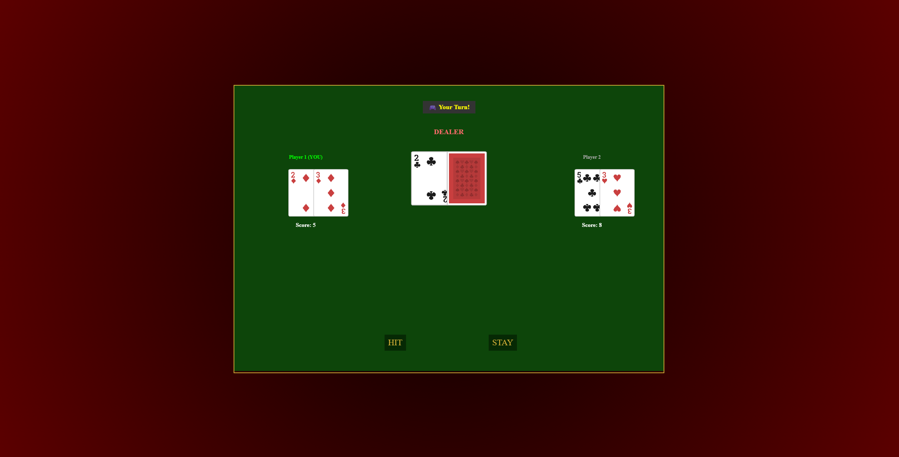

Learning-Focused
Early Stage
- Ask AI to write code, then explain it back
- Note-taking, reading explanations
- Trying to understand before moving on
Built basic mental model — but slow progress
I built a playable real-time multiplayer blackjack game using AI-assisted code generation to understand how frontend and backend frameworks interact and communicate.

Core Inquiry Question
"What are the interactions between front and backend frameworks, and how do I write and navigate them?"
Most of my prior coding had been isolated — either frontend or backend, but not both talking to each other. This question was about the relationship between client-side and server-side code: not a specific framework, but the architecture that connects them. It felt like the bridge between "knowing how to code" and "understanding why web development is complex."
Early Stage
Built basic mental model — but slow progress
After Time Crunch
Faster code generation — less personal understanding
Final Stage
Functional and visually coherent game
Each tool had its own documentation studied through NotebookLM. These quiz results are process evidence — each score represents a self-test after reading through official docs.
Canvas rendering engine used for the game client. Studied for scene management, sprite atlas loading, card rendering, and tween animations.

The backbone of client-server communication. Studied for room management, event emission, real-time state broadcasting, and connection lifecycle.

Backend runtime for the game server. Studied for the module system, HTTP/networking, server architecture, and connection handling.

Hosting platform for the live game. Studied for WebSocket support, service types, deployment pipelines, and environment configuration.

~98%
of the final codebase is JavaScript
The complexity in web development lives in logic, not structure. HTML and CSS are 2% of the work. Markup is easy. The game loop is not.
Exponential
complexity added by multiplayer
Singleplayer state is local. Multiplayer requires turn management, lobby creation, real-time sync, and state persistence — all on the server, all at once.
Different
goals: understanding vs. shipping
I shipped a working multiplayer game. I don't have fluency in the code that powers it. That's a real tradeoff I made consciously — and honestly.
Time constraints outside the project forced a real engineering decision: choose completion over polish. This turned out to be the right call.
Building singleplayer before multiplayer was deliberate, not accidental. Singleplayer let me test game state and core logic without the added complexity of networking and real-time sync. Once that worked, there was a stable jumping-off point — even though multiplayer required significantly more code and a completely different architecture.
Dealer rules, turn management, card scoring, Ace handling (1 or 11)
Start screen, hit, stay, result resolution, deal-again loop
Room creation by name, player joining (up to 4), ready-up system, turn order assignment
Players act in order. Hit and stay buttons are only visible when it's your turn. All other clients see the state update in real time.
Play testing revealed the instant result felt wrong — like nothing was happening. I pushed to add a 1–2 second delay with "Dealer Drawing..." text. Small change, big impact. This came from noticing a problem, not from planning for it.
"Write me a multiplayer blackjack game with a backend and frontend."
Too open-ended. Required extensive back-and-forth to define scope. Output was inconsistent.
"Can you explain how this code works?"
Learning-focused. Slowed progress but built a basic mental model of what was happening.
"I'm getting [this console error]. Here's the relevant code. I expected X to happen but Y happened instead. How do I fix it?"
Specific context. AI fixed it correctly more often. Fewer clarifying questions going back and forth.
"I need to add a dealer animation so you see the dealer drawing the cards — not just calculating it all at once."
Clear UX requirement. AI implemented the delay and "Dealer Drawing..." message correctly on the first attempt.


Started with Gemini for initial coding. Switched to Claude as the primary tool after Claude caught more errors during cross-verification passes. The assumption was that AI models would be objective about each other's code. They mostly were — but both still introduced bugs.
Ran out of Claude credits three times mid-development. Swapped between models strategically to keep making progress while waiting for limits to reset. This forced prioritization: which problems were blocking, and which could wait.
Deployed on Render with real-time WebSocket connections via Socket.IO. Up to four players can create or join a lobby by name, ready up, and play a full hand of blackjack against a shared dealer — all in real time across separate browsers.
Play the Game ↗Hosted on Render — may take 20–30 seconds to spin up from a cold start.


This project taught me the difference between building and learning. I came in wanting to understand frontend-backend interactions through deep, deliberate study. I left with a working multiplayer game and a surface-level understanding of how it functions. That's not failure — it's pragmatism. But it's also incomplete. I shipped a working product that demonstrates understanding of how client-server interaction works, even though I couldn't sit down and explain the actual Socket.IO implementation in detail. Understanding and shipping are different goals, and I had to choose between them. I chose to ship.
The time crunch forced real engineering decisions: build singleplayer first, cut features, report bugs precisely instead of vaguely, stop learning and start shipping. Those decisions were smart. But they also meant I couldn't afford the learning-focused approach I started with. I got faster, but less deep. Running out of AI credits three times mid-development wasn't something I planned for — it's just what happened. It taught me that time and credits are real constraints, not abstract ones, and that being strategic about which problems to solve first matters more than I expected going into a project like this.
I started thinking AI would be objective: cross-verifying models would guarantee correct output. I learned that AI tools are helpful but imperfect. Neither Claude nor Gemini is neutral. Both make mistakes. The best workflow I found was iterative: report a specific problem, AI fixes it, test it, report the next problem. If I did this again, I'd do four things differently. First, I'd buy a model subscription from the start — running out of credits three times mid-development forced the worst kind of context switching. Second, I'd set a hard deadline for the learning phase before switching into shipping mode, instead of letting time pressure collapse them together. Third, I'd document every prompt and AI response as I went — I have almost no record of what I actually asked or got back, which makes this process hard to reflect on clearly. Fourth, I'd test earlier: catching the listener-stacking bug in Week 6 instead of Week 9 would have saved several sessions of confusion. Long-term, I want to go back to this codebase and understand it — JavaScript deeply, Socket.IO specifically, and real-time state management across environments. This project gave me a clear map of exactly what I need to learn next.